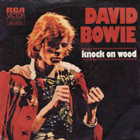
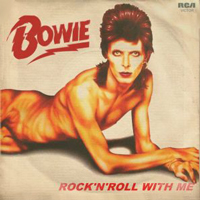

The supporting tour for Diamond Dogs was supposed to be a theatrical extravaganza, yet as he headed out on the road, David Bowie became infatuated with Philly soul and changed his entire approach to reflect his new interest, as well as his backing band in the process. As a result, the double-album David Live captures Bowie in transition, as he moves from glam rock to plastic soul. The set list draws heavily from Ziggy Stardust-era songs, yet there are a few surprises, like a stilted cover of Knock On Wood and an inspired version of All the Young Dudes, a song Bowie gave to Mott the Hoople. Since Bowie's attempts at soul are a little awkward at this stage, David Live is primarily of interest as a historical document, yet there's enough good material to make it worthwhile for fanatics.
Photographer: unknown
1984 Someday they won't let you, now you must agree The times they are a-telling and the changing isn't free You've read it in the tea leaves, and the tracks are on TV Beware the savage jaw of 1984 They'll split your pretty cranium, and fill it full of air And tell that you're eighty, but brother, you won't care You'll be shooting up on anything, tomorrow's never there Beware the savage jaw of 1984 Come see, come see, remember me? We played out an all night movie role You said it would last, but I guess we enrolled In 1984 (who could ask for more) 1984 (who could ask for mor-or-or-or-ore) (Mor-or-or-or-ore) I'm looking for a vehicle, I'm looking for a ride I'm looking for a party, I'm looking for a side I'm looking for the treason that I knew in '65 Beware the savage jaw of 1984 Come see, come see, remember me? We played out an all night movie role You said it would last, but I guess we enrolled In 1984 (who could ask for more) 1984 (who could ask for mor-or-or-or-ore) (Mor-or-or-or-ore) 1984 REBEL REBEL You've got your mother in a whirl She's not sure if you're a boy or a girl Hey, babe, your hair's alright Hey, babe, let's go out tonight You like me and I like it all We like dancing and we look divine You love bands when they're playing hard You want more and you want it fast They put you down, they say I'm wrong You tacky thing, you put them on Rebel Rebel, you've torn your dress Rebel Rebel, your face is a mess Rebel Rebel, how could they know? Hot tramp, I love you so Don't ya? Doo doo doo-doo doo doo-doo doo You've got your mother in a whirl 'Cause she's not sure if you're a boy or a girl Hey, babe, your hair's alright Hey, babe, let's stay out tonight You like me and I like it all We like dancing and we look divine You love bands when they're playing hard You want more and you want it fast They put you down, they say I'm wrong You tacky thing, you put them on Rebel Rebel, you've torn your dress Rebel Rebel, your face is a mess Rebel Rebel, how could they know? Hot tramp, I love you so Don't ya? Ooh! Doo doo doo-doo doo doo-doo doo Doo doo doo-doo doo doo-doo doo Rebel Rebel, you've torn your dress Rebel Rebel, your face is a mess Rebel Rebel, how could they know? Hot tramp, I love you so (don't ya?) You've torn your dress, your face is a mess You can't get enough, but enough ain't the test You've got your transmission and your live wire You got your cue line and a handful of ludes You wanna be there when they count up the dudes And I love your dress You're a juvenile success Because your face is a mess So how could they know? I said, how could they know? So what you wanna know? Calamity's child, chi-chi, chi-chi Where'd you wanna go? What can I do for you? Looks like I've been there too 'Cause you've torn your dress And your face is a mess Ooh, your face is a mess Ooh, ooh, so how could they know? Ah, ah, how could they know? Ah, ah MOONAGE DAYDREAM I'm an alligator, I'm a mama-papa coming for you I'm the space invader, I'll be a rock 'n' rollin' bitch for you Keep your mouth shut, You're squawking like a pink monkey bird And I'm busting up my brains for the words [CHORUS] Keep your 'lectric eye on me babe Put your ray gun to my head Press your space face close to mine, love Freak out in a moonage daydream, oh yeah! Don't fake it baby, lay the real thing on me The church of man, love Is such a holy place to be Make me baby, make me know you really care Make me jump into the air [CHORUS x3] Freak out, far out, in out SWEET THING / CANDIDATE / SWEET THING (REPRISE) It's safe in the city To love in a doorway To wrangle some screams from the dawn And isn't it me Putting pain in a stranger? Like a portrait in flesh, who trails on a leash Will you see that I'm scared and I'm lonely? So I'll break up my room, and yawn and I Run to the centre of things Where the knowing one says: "Boys, Boys, it's a sweet thing Boys, Boys, it's a sweet thing, sweet thing If you want it, boys, get it here, thing For hope, boys, is a cheap thing, cheap thing" I'm glad that you're older than me Makes me feel important and free Does that make you smile, isn't that me? I'm in your way, and I'll steal every moment If this trade is a curse, then I'll bless you And turn to the crossroads of Hamburgers, and "Boys, Boys, it's a sweet thing Boys, Boys, it's a sweet thing, sweet thing If you want it, boys, get it here, thing For hope, boys, is a cheap thing, cheap thing" I'll make you a deal, like any other candidate We'll pretend we're walking home 'cause your future's at stake My set is amazing, it even smells like a street There's a bar at the end where I can meet you and your friend Someone scrawled on the walls "I smell the blood of Les Tricoteuses" Who wrote up scandals in other bars I'm having so much fun with the poisonous people Spreading rumours and lies and stories they made up Some make you sing and some make you scream One makes you wish that you'd never been seen But there's a shop on the corner that's selling papier-m�ch� Making bullet-proof faces; Charlie Manson, Cassius Clay If you want it, boys, get it here, thing So you scream out of line: "I want you! I need you! Anyone out there? Any time?" Tres butch little number whines "Hey dirty, I want you When it's good, it's really good, and when it's bad I go to pieces" If you want it, boys, get it here, thing Well, on the street where you live I could not hold up my head For I gave all I have in another bed On another floor, in the back of a car In the cellar of a church with the door ajar Well, I guess we must be looking for a different kind But we can't stop trying 'til we break up our minds 'Til the sun drips blood on the seedy young knights Who press you on the ground while shaking in fright I guess we could cruise down one more time With you by my side, it should be fine We'll buy some drugs and watch a band Then jump in the river holding hands If you want it, boys, get it here, thing For hope, boys, is a cheap thing, cheap thing Is it nice in your snow storm, freezing your brain? Do you think that your face looks the same? Then let it be, it's all I ever wanted It's a street with a deal and a taste It's got claws, it's got me, it's got you CHANGES I still don't know what I was waiting for And my time was running wild A million dead-end streets, and Every time I thought I'd got it made It seemed the taste was not so sweet So I turned myself to face me But I've never caught a glimpse Of how the others must see the faker I'm much too fast to take that test Ch-ch-ch-ch-Changes (Turn and face the strain) Ch-ch-Changes Don't want to be a richer man Ch-ch-ch-ch-Changes (Turn and face the strain) Ch-ch-Changes Just gonna have to be a different man Time may change me But I can't trace time I watch the ripples change their size But never leave the stream Of warm impermanence, and So the days float through my eyes But still the days seem the same And these children that you spit on As they try to change their worlds Are immune to your consultations They're quite aware of what they're going through Ch-ch-ch-ch-Changes (Turn and face the strain) Ch-ch-Changes Don't tell them to grow up and out of it Ch-ch-ch-ch-Changes (Turn and face the strain) Ch-ch-Changes Where's your shame You've left us up to our necks in it Time may change me But you can't trace time Strange fascination, fascinating me Changes are taking the pace I'm going through Ch-ch-ch-ch-Changes (Turn and face the strain) Ch-ch-Changes Oh, look out you rock'n'rollers Ch-ch-ch-ch-Changes (Turn and face the strain) Ch-ch-Changes Pretty soon now you're gonna get older Time may change me But I can't trace time I said that time may change me But I can't trace time SUFFRAGETTE CITY Hey man, oh leave me alone you know Hey man, oh Henry, get off the phone, I gotta Hey man, I gotta straighten my face This mellow thighed chick Just put my spine out of place Hey man, my schooldays insane Hey man, my work's down the drain Hey man, well she's a total blam-blam She said she had to squeeze it but she... then she... [CHORUS] Oh don't lean on me man Cause you can't afford the ticket I'm back on Suffragette City Oh don't lean on me man Cause you ain't got time to check it You know my Suffragette City Is outta sight... she's all right Hey man, Henry, don't be unkind, go away Hey man, I can't take you this time, no way Hey man, droogie don't crash here There's only room for one and here she comes Here she comes [CHORUS] A Suffragette City, a Suffragette City I'm back on Suffragette City [x2] Suffragette City Oohh, Wham Bam Thank You Ma'am! Suffragette City [ad lib] ALADDIN SANE (1913-1938-197?) Watching him dash away Swinging an old bouquet (dead roses) Sake and strange divine Uh-huh-huh-uh, huh-uh (you'll make it) Passionate bright young things Takes him away to war (don't fake it) Saddening glissando strings Uh-huh-huh-uh, huh-uh (you'll make it) Who will love Aladdin Sane? Battle cries and champagne Just in time for sunrise Who will love Aladdin Sane? Motor sensational Paris or maybe hell (I'm waiting) Clutches of sad remains Waits for Aladdin Sane (you'll make it) Who will love Aladdin Sane? Millions weep a fountain Just in case of sunrise Who will love Aladdin Sane? Will love Aladdin Sane Love Aladdin Sane Who will love Aladdin Sane? Millions weep a fountain Just in case of sunrise Who will love Aladdin Sane? Will love Aladdin Sane Will love Aladdin Sane They say the lights are oh so bright on Broadway ALL THE YOUND DUDES Well, Billy rapped all night about his suicide How he'd kick it in the head when he was twenty-five Speed jive, don't want to stay alive When you're twenty-five And Wendy's stealing clothes from Marks and Sparks And Freddy's got spots from ripping off the stars From his face Funky little boat race Television man is crazy Saying we're juvenile deliquent wrecks Oh, man, I need TV when I got T-Rex Oh, brother, you've guessed, I'm a dude, dad All the young dudes (Hey, dudes!) Carry the news (Where are you?) Boogaloo dudes (Stand up, come on!) Carry the news All the young dudes (I want to hear you!) Carry the news (I want to see you!) Boogaloo dudes (And I want to talk to you! All of you!) Carry the news Now Lucy looks sweet 'cause he dresses like a queen But he can kick like a mule, it's a real mean team But we can love Oh yes, we can love And my brother's back at home with his Beatles and his Stones We never got it off on that revolution stuff What a drag Too many snags Now I've drunk a lot of wine and I'm feeling fine Got to race some cat to bed Oh, is there concrete all around or is it in my head? Yeah, I'm a dude, dad All the young dudes (Hey, dudes!) Carry the news (Where are you?) Boogaloo dudes (Stand up!) Carry the news All the young dudes (I want to hear you!) Carry the news (I want to see you!) Boogaloo dudes (And I want to relate to you!) Carry the news All the young dudes (What dudes?) Carry the news (Let's hear the news, come on!) Boogaloo dudes (I want to kick you!) Carry the news All the young dudes (Hey, you there, with the glasses!) Carry the news (I want you!) Boogaloo dudes (I want you at the front!) Carry the news (Now you, all his friends!) All the young dudes (Now you bring him down, 'cause I want him!) Carry the news Boogaloo dudes (I want him right here, bring him, come on!) Carry the news (Bring him, ha ha, here you go!) All the young dudes (I've wanted to do this for years, ha ha ha!) Carry the news (There you go!) Boogaloo dudes (How do you feel?) Carry the news CRACKED ACTOR I've come on a few years from my Hollywood Highs The best of the last, the cleanest star they ever had I'm stiff on my legend, the films that I made Forget that I'm fifty 'cause you just got paid Crack, baby, crack, show me you're real Smack, baby, smack, is that all that you feel Suck, baby, suck, give me your head Before you start professing that you're knocking me dead Oh, stay Please stay Please stay You caught yourself a trick down on Sunset and Vine But since he pinned you, baby, you're a porcupine You sold me illusions for a sack full of cheques You've made a bad connection 'cause I just want your sex Crack, baby, crack, show me you're real Smack, baby, smack, is that all that you feel Suck, baby, suck, give me your head Before you start professing that you're knocking me dead Oh yeah Ooh, stay for a day Ooh yeah Don't you dare Oh yeah, yeah, yeah, yeah Woo! Woo! Oh yeah ROCK 'N' ROLL WITH ME You always were the one that knew They sold us for the likes of you I always wanted new surroundings A room to rent while the lizards lay crying in the heat Trying to remember who to meet I would take a foxy kind of stand While tens of thousands found me in demand When you rock and roll with me No one else I'd rather be Nobody here can do it for me I'm in tears again When you rock and roll with me Gentle hearts are counted down The queue is out of sight and out of sounds Me, I'm out of breath, but not quite doubting I've found a door which lets me out! When you rock and roll with me No one else I'd rather be Nobody down here can do it for me I'm in tears again When you rock and roll with me Oh, when you rock and roll with me There's no one else I'd rather be Nobody down here can do it for me When you rock and roll with me When you rock and roll, when you rock and roll with me No one else I'd rather, I'd rather be Nobody here can do it for me I'm in tears, I'm in tears When you rock and roll with me WATCH THAT MAN Shakey threw a party that lasted all night Everybody drank a lot of something nice There was an old fashioned band of married men Looking up to me for encouragement - it was so-so The ladies looked bad but the music was sad No one took their eyes off Lorraine She shimmied and she strolled like a Chicago moll Her feathers looked better and better - it was so-so Yeah! It was time to unfreeze When the Reverend Alabaster danced on his knees Slam! So it wasn't a game Cracking all the mirrors in shame Watch that man! Oh honey, watch that man He talks like a jerk but he could eat you with a fork and spoon Watch that man! Oh honey, watch that man He walks like a jerk but he's only taking care of the room Must be in tune A Benny Goodman fan painted holes in his hands So Shakey hung him up to dry The pundits were joking, the manholes were smoking And every bottle battled with the reason why The girl on the phone wouldn't leave me alone A throw back from someone's LP A lemon in a bag played the Tiger Rag And the bodies on the screen stopped bleeding Yeah! I was shaking like a leaf For I couldn't understand the conversation Yeah! I ran to the street Looking for information Watch that man! Oh honey, watch that man He talks like a jerk but he could eat you with a fork and spoon Watch that man! Oh honey, watch that man He walks like a jerk but he's only taking care of the room Must be in tune Watch that man Watch that man Watch that man Watch that man KNOCK ON WOOD I don't want to lose the good thing That I've got, if I do I will surely, I will lose a lot For your love is better Than any other love I've known It's like thunder, lightning The way you love me is frightening I'd better knock on wood, baby I got superstitious about you But I can't take a chance You got me spinnin', baby Spinning in a trance But your love is better Than any other love I've known It's like thunder, lightning The way you love me is frightening You'd better knock on wood, yeah! It's no secret But that woman Fills my lovin' cup She seems so ready That I can't get enough And her love is better Than any other love I've known It's like thunder, it's like lightning The way you love me is frightening I'd better knock on wood, baby! Ooh yeah Better, yes, better (You'd better knock, knock, knock on wood) (You'd better knock, knock, knock on wood) (You'd better knock, knock, knock on wood) Knock on wood! Woo! DIAMOND DOGS This ain't rock 'n' roll, this is genocide! As they pulled you out of the oxygen tent You asked for the latest party With your silicone hump and your ten inch stump Dressed like a priest you was Tod Browning's Freak you was Crawling down the alley on your hands and knee I'm sure you're not protected, for it's plain to see The Diamond Dogs are poachers and they hide behind trees Hunt you to the ground they will, mannequins with kill appeal (Will they come?) I'll keep a friend serene (Will they come?) Oh baby, come on to me (Will they come?) Well, she's come, been and gone Come out of the garden, baby You'll catch your death in the fog Young girl, they call them the Diamond Dogs Young girl, they call them the Diamond Dogs The Halloween Jack is a real cool cat And he lives on top of Manhattan Chase The elevator's broke, so he slides down a rope Onto the street below, oh Tarzan, go man go Meet his little hussy with his ghost town approach Her face is sans feature, but she wears a Dali brooch Sweetly reminiscent, something mother used to bake Wrecked up and paralysed, Diamond Dogs are stabilised (Will they come?) I'll keep a friend serene (Will they come?) Oh baby, come on to me (Will they come?) Well, she's come, been and gone Come out of the garden, baby You'll catch your death in the fog Young girl, they call them the Diamond Dogs Young girl, they call them the Diamond Dogs (Oh-oh-ooh) call them the Diamond Dogs (Oh-oh-ooh) call them the Diamond Dogs Oh, hoo! Ah ooh! In the year of the scavenger, the season of the bitch Sashay on the boardwalk, scurry to the ditch Just another future song, lonely little kitsch (There's gonna be sorrow) try and wake up tomorrow (Will they come?) I'll keep a friend serene (Will they come?) Oh baby, come on to me (Will they come?) Well, she's come, been and gone Come out of the garden, baby You'll catch your death in the fog Young girl, they call them the Diamond Dogs Young girl, they call them the Diamond Dogs Oh-oh-ooh, call them the Diamond Dogs Oh-oh-ooh, call them the Diamond Dogs Bow-wow, woof woof, bow-wow, wow Call them the Diamond Dogs Dogs! Call them the Diamond Dogs, call them, they call them Call them the Diamond Dogs, call them, call them, ooh hoo! Call them the Diamond Dogs Keep cool, Diamond Dogs rule, OK Hey! Hey! Hey! Hey! (Beware of the Diamond Dogs) (Beware of the Diamond Dogs) (Beware of the Diamond Dogs) (Beware of the Diamond Dogs) BIG BROTHER / CHANT OF THE EVER-CIRCLING SKELETAL FAMILY Don't talk of dust and roses Or should we powder our noses? Don't live for last year's capers Give me steel, give me steel, give me pulsars unreal He'll build a glass asylum With just a hint of mayhem He'll build a better whirlpool We'll be living from sin Then we can really begin Please saviour, saviour, show us Hear me, I'm graphically yours Someone to claim us, someone to follow Someone to shame us, some brave Apollo Someone to fool us, someone like you We want you Big Brother, Big Brother I know you think you're awful square But you made everyone and you've been every where Lord I think you'd overdose if you knew what's going down Someone to claim us, someone to follow Someone to shame us, some brave Apollo Someone to fool us, someone like you Someone to claim us, someone to follow Someone to shame us, some brave Apollo Someone to fool us, someone like you Someone to claim us, someone to follow Someone to shame us, some brave Apollo Someone to fool us, someone like you We want you Big Brother Brother Ooh-ooh Shake it up, shake it up Move it up, move it up Brother Ooh-ooh Shake it up, shake it up Move it up, move it up Brother Ooh-ooh Shake it up, shake it up Move it up, move it up Brother Ooh-ooh Shake it up, shake it up Move it up, move it up Brother Ooh-ooh Shake it up, shake it up Move it up, move it up Brother Ooh-ooh Shake it up, shake it up Move it up, move it up Bro bro bro bro bro bro bro bro bro bro Bro bro bro bro bro bro bro bro bro bro Bro bro bro bro bro bro bro bro bro bro THE WIDTH OF A CIRCLE In the corner of the morning in the past I would sit and blame the master first and last All the roads were straight and narrow And the prayers were small and yellow And the rumour spread that I was aging fast Then I ran across a monster who was sleeping by a tree And I looked and frowned and the monster was me Well, I said, "Hello," and I said, "Hello." And I asked, "Why not?" and I replied, "I don't know." So we asked a simple black bird, who was happy as can be Well, he laughed insane and quipped, "Kahlil Gibran." And I cried for all the others 'til the day was nearly through For I realized that God's a young man too So I said, "So long" and I waved "Bye-bye" And I smashed my soul and traded my mind Got laid by a young bordello Who was vaguely half asleep For which my reputation swept back home in drag And the morals of this magic spell Negotiate my hide When God did take my logic for a ride Riding along He swallowed his pride and puckered his lips Then showed me the leather belt 'round his hips My knees were shaking my cheeks aflame He said, "You'll never go down to the Gods again." (Turn around,go back!) He struck the ground a cavern appeared And I smelt the burning pit of fear We crashed a thousand yards below I said, "Do it again, do it again." (Turn around,go back!) His nebulous body swayed above His tongue swollen with devil's love The snake and I, a venom high I said, "Do it again, do it again." (Turn around, go back!) Breathe, breathe, breathe deeply And I was seething, breathing deeply Spitting sentry, horned and tailed Waiting for you THE JEAN GENIE A small Jean Genie snuck off to the city Strung out on lasers and slash back blazers And ate all your razors while pulling the waiters Talking 'bout Monroe and walking on Snow White New York's a go-go and everything tastes nice Poor little Greenie Woo-hoo (Get back one) [CHORUS] The Jean Genie lives on his back The Jean Genie loves chimney stacks (The Jean Genie) he's outrageous, he screams and he bawls The Jean Genie, let yourself go, oh Sits like a man, but he smiles like a reptile She loves him, she loves him, but just for a short while She'll scratch in the sand, won't let go his hand He says he's a beautician and sells you nutrition And keeps all your dead hair for making up underwear Poor little Greenie [CHORUS] He's so simple minded, he can't drive his module He bites on the neon and sleeps in the capsule Loves to be loved Loves to be loved Woo-hoo Woo-hoo [CHORUS] Go Go [CHORUS] Go Go, go ROCK 'N' ROLL SUICIDE Time takes a cigarette, puts it in your mouth You pull on your finger, then another finger, then your cigarette The wall-to-wall is calling, it lingers, then you forget Ohhh, you're a rock 'n' roll suicide You're too old to lose it, too young to choose it And the clock waits so patiently on your song You walk past a cafe But you don't eat when you've lived too long Oh, no, no, no, you're a rock 'n' roll suicide Chev brakes are snarling as you stumble across the road But the day breaks instead so you hurry home Don't let the sun blast your shadow Don't let the milk float ride your mind You're so natural - religiously unkind Oh no love! you're not alone You're watching yourself but you're too unfair You got your head all tangled up But if I could only make you care Oh no love! you're not alone No matter what or who you've been No matter when or where you've seen All the knives seem to lacerate your brain I've had my share, I'll help you with the pain You're not alone Just turn on with me and you're not alone Let's turn on with me and you're not alone Let's turn on and be not alone Gimme your hands cause you're wonderful [x2] Oh gimme your hands
SINGLES

